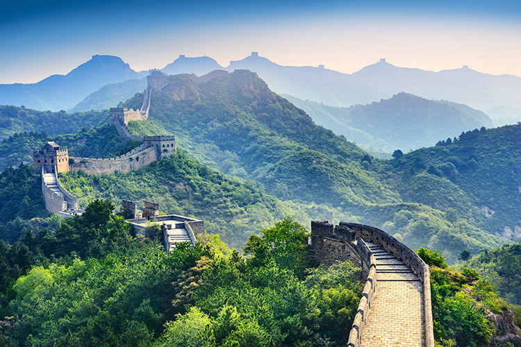

Great Wall of China
What is the Great Wall of China?
The Great Wall is a 13000 mile long structure that flows through the Chinese countryside. The Great Wall was made by joining multiple separate walls that were built by different states during the Chunqiu period, the walls were joined when the states were unified in 221 BC.
Tips on visiting
There are multiple locations of the wall that are popular to visit. Badaling is the most popular section to visit and the most well preserved, it is located 20 minutes from Beijing via high speed train from Beijing North Station. The Mutianyu section is a good option if you don't want the hike, it offers cable cars to get up and down the wall, you can also get down the wall in a more fun way via a toboggan slide. The Mutianyu section is accessible via a shuttle bus from Beijing, taking approximately 2 hours.